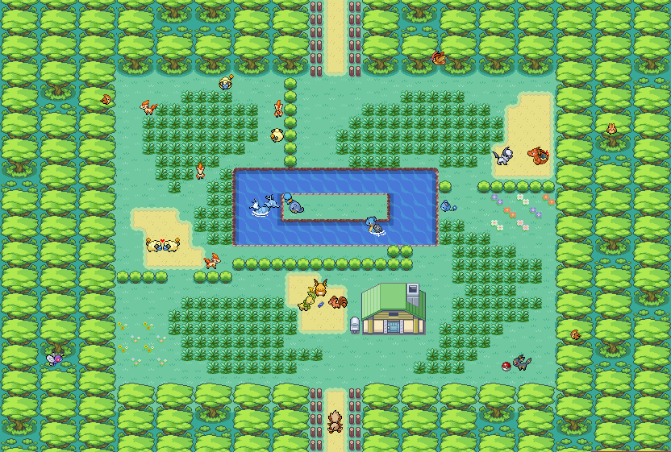
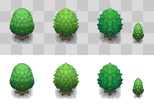
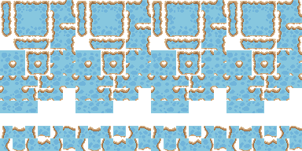

Dans notre jeu de simulation, la carte joue un rôle crucial en définissant l'espace dans lequel gardiens et intrus interagissent. Constituée d'une grille N x N, la carte est peuplée d'obstacles variés qui influencent les stratégies de déplacement et de visibilité. Chaque partie de la carte est générée avec soin pour offrir une expérience à la fois aléatoire et stratégiquement complexe, rendant chaque session de jeu unique.
Composition de la Carte
La carte est divisée en cases, chacune pouvant contenir un obstacle ou être libre pour permettre le passage. La configuration des obstacles est déterminante pour le gameplay, car elle influence directement les mouvements possibles du gardien et ses lignes de vision.

fig 1: Map du parc
Types d’Obstacles et Leur Impact
Les intrus, éléments clés de notre simulation, se distinguent par leurs sprites variés qui communiquent visuellement leur nature et leur stratégie
Arbres
Fonction
Les arbres bloquent la vision du gardien mais permettent le passage. Ils sont essentiels pour ajouter de la complexité à la stratégie visuelle du jeu.
Design
Visuellement, les arbres sont représentés avec divers feuillages et hauteurs, offrant un aspect naturel et varié à la carte.

fig 2: Arbres du parc
Eau
Fonction
L'eau représente une barrière infranchissable pour le gardien mais n'entrave pas sa vue. Elle oblige les joueurs à réfléchir à des itinéraires alternatifs.
Design
Les plans d'eau sont représentés avec des effets de transparence et des animations légères qui suggèrent le mouvement de l'eau.

fig 3: Lac du parc
Roche
Fonction
Les murs sont des obstacles complets, bloquant à la fois le passage et la vision. Ils sont les défis les plus restrictifs sur la carte.
Design
Les murs sont illustrés avec différents matériaux (pierre, brique, bois) pour diversifier visuellement la grille et ajouter un élément de réalisme.